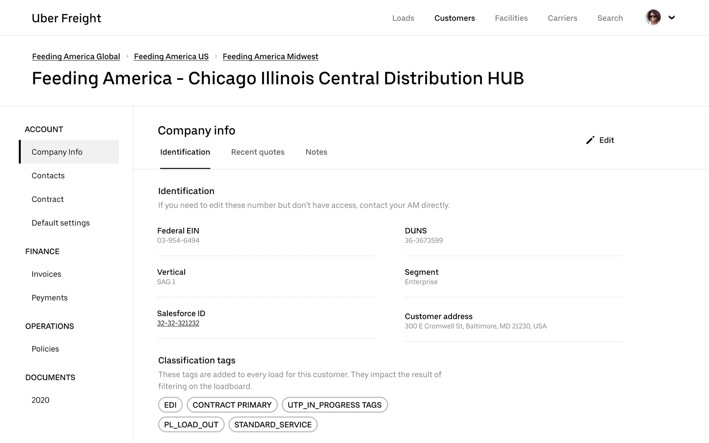
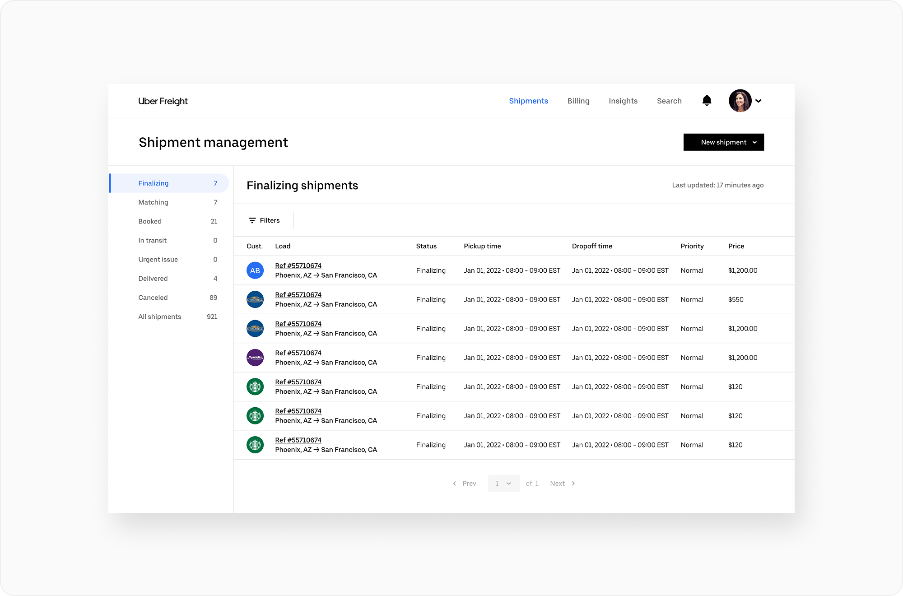
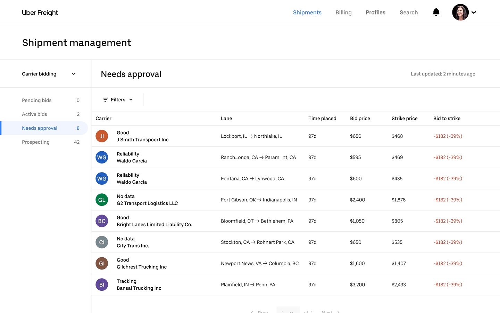

Onboarding for payments
Led redesign of Stripe Connect's onboarding flow, helping platforms and marketplaces go from sign-up to live driving a ~60% lift in conversion and 16% more self-serve activations.

Automated profiles
A significant focus was establishing a unified framework for customer, carrier, and facility profiles — ensuring they worked and felt consistent across the entire ecosystem. What had previously been a manual, error-prone process became the backbone of the platform: automated profiles that reduced the operational overhead of maintaining critical freight data.
The patterns were designed to handle scale — from high-volume data entry to the transition from handwritten notes to programmable, automatically updated information. Facility hours, compliance rules, and load management became more accurate and less reliant on manual ops teams, ultimately driving down the cost per load and freeing the business to operate more efficiently.

Load management
Displaying loads required careful thinking around density — brokerages managing thousands of loads a day had fundamentally different needs than SMBs handling a handful each month. After exploring list views, cards, and everything in between, we landed on a moderate-density list view with hover-triggered quick actions, striking the right balance between information richness and visual clarity.
Filtering presented a similar scaling challenge. A power user juggling thousands of loads might need 5–10 active filters simultaneously, while another user was searching for a single load under one parameter. We designed a sheet-based filtering pattern that could expand or collapse gracefully depending on the use case — powerful when needed, invisible when not.


Taking action
Action sheets became the backbone of load servicing — repetitive actions taken across multiple loads at different stages of the lifecycle demanded a pattern that could handle varying levels of complexity. Whether a broker was deep in a high-touch servicing workflow or a shipper completing a straightforward task, the experience needed to flex without breaking.
We explored quarter sheets before landing on full-page sheets as the primary pattern. Quarter sheets worked well for brief, low-complexity tasks in earlier load stages, but customer operations made clear that denser, more detailed interactions required more room to breathe. For shippers, we adapted the same sheets with more generous spacing and a lighter consumer-facing feel — same pattern, meaningfully different experience.